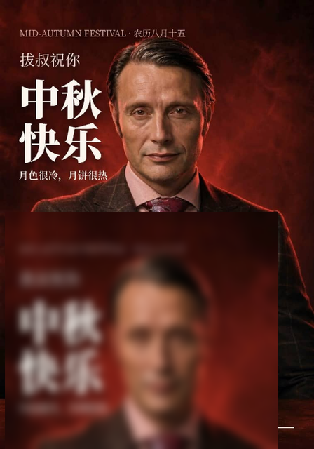

原图
已去除


处理说明
- 输入：/ws/source.png（448×640 RGB）
- 检测：下半区亮色低饱和像素统计，定位标牌矩形
- 擦除：取牌下方条带做高斯模糊背景，羽化边缘贴回
- 脚本：remove_sign.py / detect_and_remove.py / detect2.py（可复跑）
基于你上传的 source.png（448×640）处理：检测底部高亮标牌区域 → 邻域背景羽化填充擦除。
